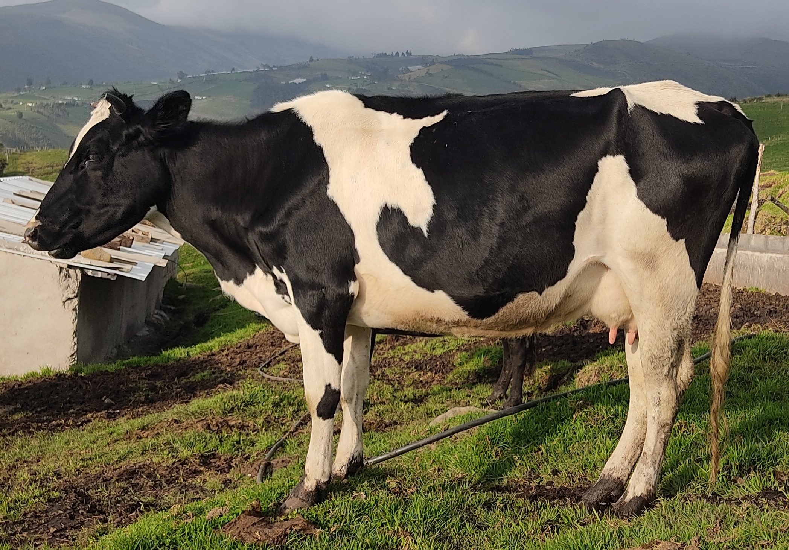
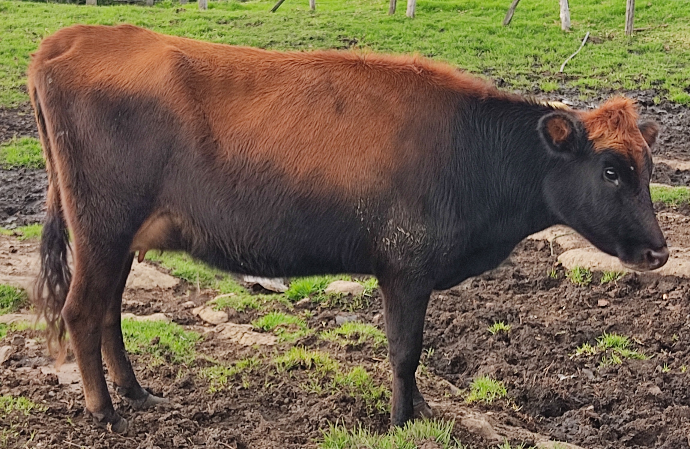
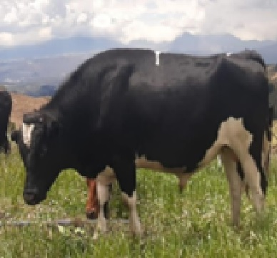
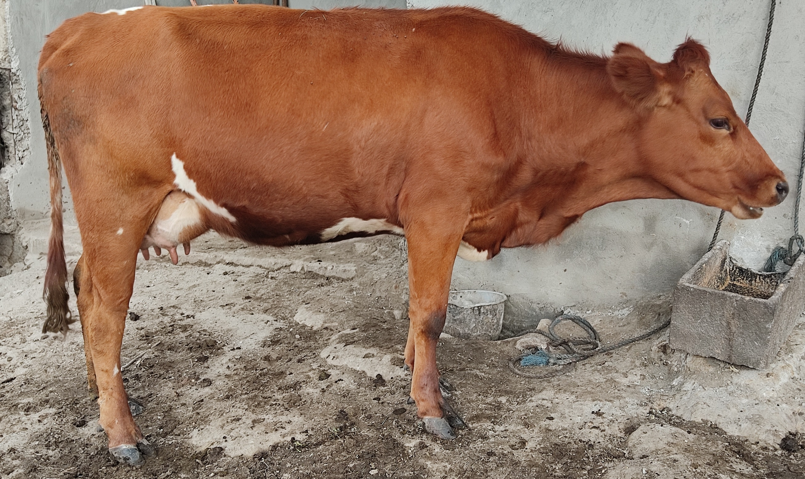

| Foto | Raza | Proposito | Crias | Descripción |
|---|---|---|---|---|
|  | Holstein | Leche | 1 | Los promedios generales y errores estándares para duración de la lactancia (DL), producción de leche durante la lactancia (PL) y producción de leche hasta los 305 días. |
|  | Jersey | Leche | 02 | La leche Jersey rinde mas queso (20 a 25% mas), manteca (sobre 30%) y leche descremada en polvo (casi 10% más) comparada con la leche promedio a un más bajo costo por kilo de producto. |
|  | Holstein | Padre | 08 | El semental Holstein-Rojo SOLI-RED P es el #1 por producción de vida y el # 1 por eficiencia alimentación de OHG y también se encuentra entre los 10 mejores de Alemania con RZG 158. |
|  | Jersey | Leche | 01 | La leche A2 proviene de las vacas con dos copias del gen A2 para beta caseína. La leche A2 proviene de las vacas con dos copias del gen A2 para beta caseína. La leche de vaca es aproximadamente 87 por ciento de agua y 13 por ciento de sólidos. |
 |
Jersey | Leche | - | Las crías mientras están en lactancia. Choto: En algunos países se refiere a los becerros. |
Listas de nombres hembras del Rancho
- COFFE
- MANZANA
- ESTRELLA
- ESPERANZA
- ISABELLA
- NINA
- IDALIA
- REINA
- INES
- CAMILA
Nombres de toros del Rancho
- Monito
- Camilo
- Andres
- Guayaco
- Bracilero